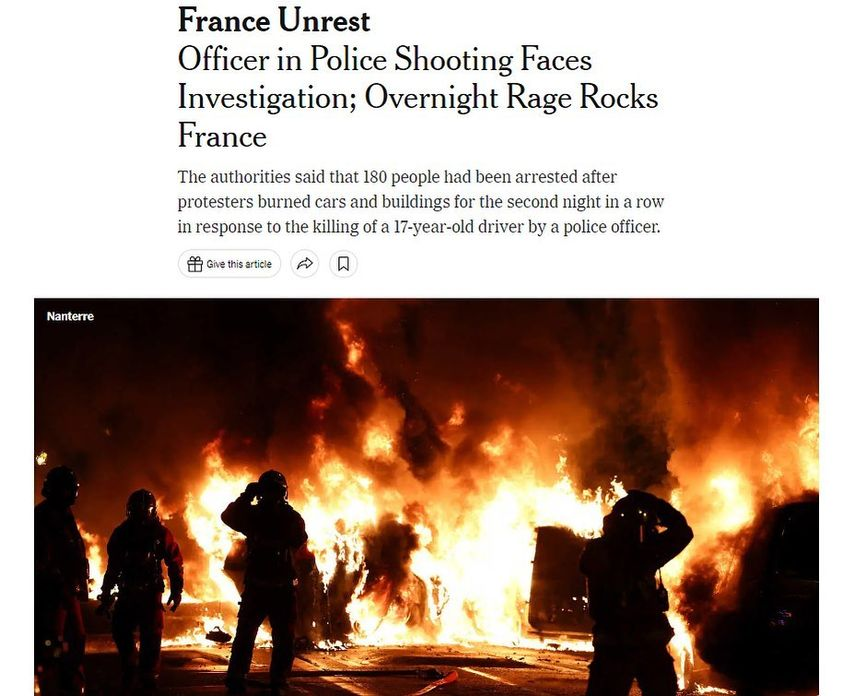

Timeline photos
This is happening in France right now.
My significant loss for city council has changed my mind about some things.
I now deeply understand that Democracy is a popularity contest run by people that mostly care about how the outcome will effect them personally. Most people care very little about the suffering of people who are not in their immediate circle of close friends and family.
Change will only happen through revolt and uprising.
And that will only happen by people who are willing to risk their lives, financial well-being and freedom for justice.
I’m deeply proud of the French people for standing up against police violence in this way.
I am embarrassed to say: that isn’t me. I tried as hard as I could for that election. And maybe if I went to a more liberal state and city I’d have better luck. But they don’t need me. Akron oppression is what it is because most people don’t care. Or worse, they hate the poor people of their city.
Kristen, a good homeless friend of mine recently asked me to not give up on them. I won’t. I’m not leaving Akron. But I’m done trying to think I can change the system. I’m just going to help in whatever way I can.
I am just going to be a guy that helps people. I’m done trying to change the system. The system has always been brutal and terrible. Sadly, I’m not willing to die to change it. So I’m just going to help the few people I’m able to help and tell the story.